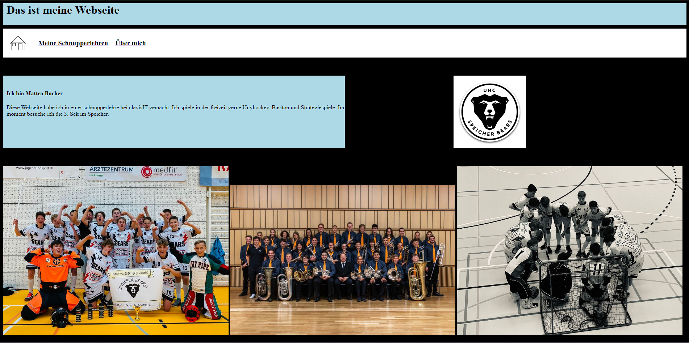

Webseite
Meine Erste Webseite habe ich in einer schnupperlehre bei der ClavisIT ertsellt. Das ist etwa zwei Jahre her.
Meine Erste Webseite habe ich in einer schnupperlehre bei der ClavisIT ertsellt. Das ist etwa zwei Jahre her.
Im ZBW sind wir gerade in der Projektphase. Ich arbeite an einem Konzept für eine Räucheranlage, bei der die Temperatur im Innenraum automatisch konstant gehalten wird.